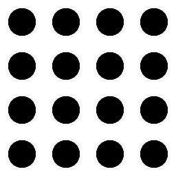
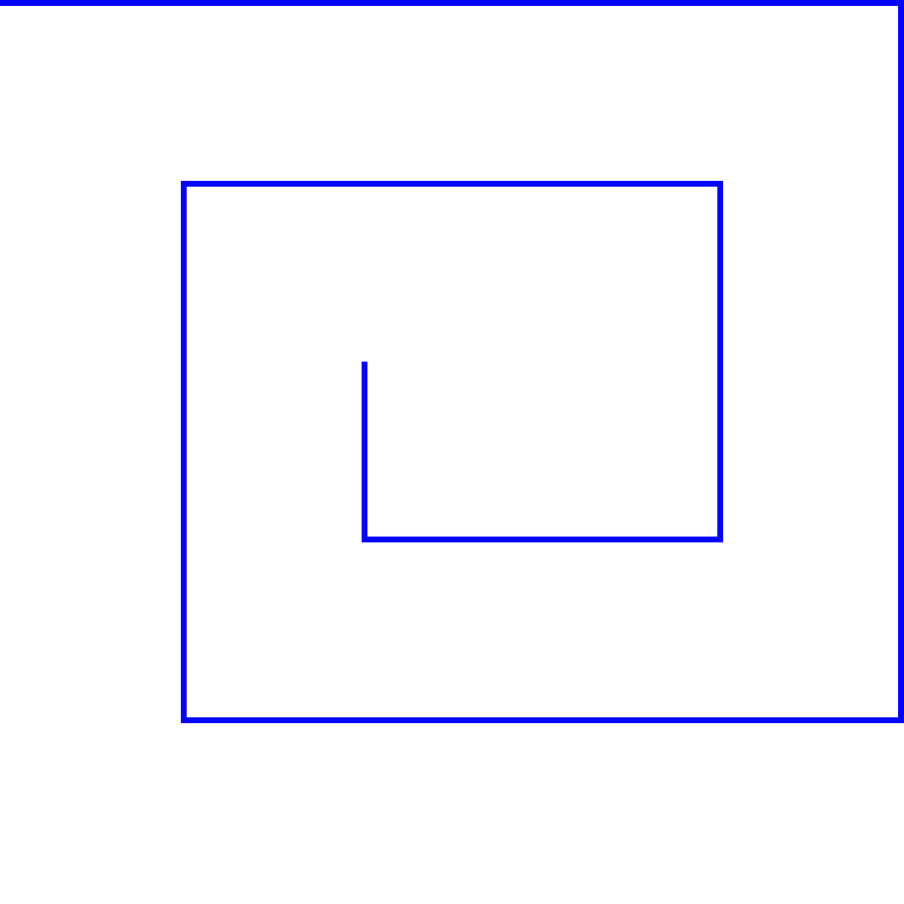
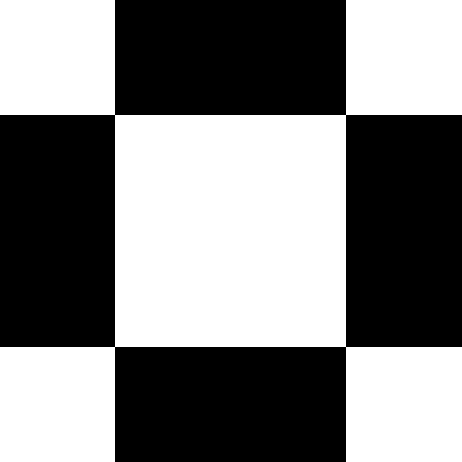

Pattern¶
-
class
arlunio.pattern.Checker(*, x0=0, scale=1, stretch=False, y0=0)[source]¶ Inputs:
width: intheight: intBases:
Produces:

A simple checker pattern
-
class
arlunio.pattern.Grid(*, n=4, m=None, defn=None)[source]¶ Inputs:
width: intheight: intProduces:
Repeatedly draw the given defintition in a grid.
This works by splitting the resolution of the final image into an
nbymgrid and rendering the given definition instance once and tiling the result across the remaining grid squares.Note
Due to a limitation in the current implementation of this, you will get the best results if your
nbymgrid divides cleanly into the resolution of the final image.-
n¶ The number of times to repeat the shape horizontally across the image
-
m¶ The number of times to repeat the shape vertically across the image. If
Nonethis defaults to the value ofn
-
defn¶ The instance of the definition to draw.
Examples

A pattern generated from circles:¶
import arlunio as ar import numpy as np from arlunio.image import fill from arlunio.math import X, Y from arlunio.shape import Circle from arlunio.pattern import Grid @ar.definition def Template(x:X, y: Y): c = Circle(xc=.4, yc=.4, pt=.02) return c(x=np.abs(x), y=np.abs(y)) pattern = Grid(defn=Template(scale=1.)) image = fill( pattern(width=512, height=512), background="#000", color="#ff0" )
A checkerboard like pattern

A checkerboard like pattern:¶
import arlunio as ar import numpy as np from arlunio.image import fill from arlunio.math import X, Y from arlunio.pattern import Grid @ar.definition def Template(x: X, y: Y): return np.abs(x) - np.abs(y) < 0 grid = Grid(defn=Template(), n=16, m=8) image = fill(grid(width=512, height=256))
-
-
class
arlunio.pattern.Map(*, layout=None, legend=None)[source]¶ Inputs:
width: intheight: intProduces:
For more complex layouts.
Note
Due to a limitation in the current implementation, you will get best results if the dimenions of the
layoutgrid divide cleanly into the dimensions of the final image.-
layout¶ A 2D numpy array of values detailing what to draw where.
-
legened¶ A dictionary that maps values from the layout to definition instances to draw
Example
import arlunio as ar import numpy as np from arlunio.image import fill from arlunio.mask import any_ from arlunio.pattern import Map from arlunio.shape import Rectangle @ar.definition def Wall(width: int, height: int, *, sides=None): r = 50 d = 1 walls = { 'top': {"yc": d, "ratio": r}, 'bottom': {"yc": -d, "ratio": r}, 'left': {"xc": -d, "ratio": 1/r}, "right": {"xc": d, "ratio": 1/r} } mask = False for side in sides.split('-'): wall = Rectangle(size=0.2, **walls[side]) mask = any_(mask, wall(width=width, height=height)) return mask legend = { "tt": Wall(sides="top"), "bb": Wall(sides="bottom"), "ll": Wall(sides="left"), "rr": Wall(sides="right"), "tl": Wall(sides="top-left"), "tr": Wall(sides="top-right"), "bl": Wall(sides='bottom-left'), "br": Wall(sides="bottom-right") } layout = np.array([ ["tt", "tt", "tt", "tt", "tr"], [ "", "tl", "tt", "tr", "rr"], [ "", "ll", "bl", "br", "rr"], [ "", "bl", "bb", "bb", "br"], [ "", "", "", "", ""] ]) map_ = Map(legend=legend, layout=layout) image = fill(map_(width=1080, height=1080), color="blue")
-
{kind=link}
-
class
arlunio.pattern.Pixelize(*, pixels=None, defn=None, n=None, m=None)[source]¶ Inputs:
width: intheight: intProduces:

Draw a pixelated version of a definition:¶
Note
Due to a limitation in the current implementation you will get the best results if your values for
nandmcleanly divides into the resolution of the final image. This also applies to the dimensions of your array if you are providing thepixelsattribute directly.Note
Due to how each enlarged pixel in the final image is mapped onto a rectangular region of real pixels, unless your
nbymgrid matches the aspect ratio of the final image you will find your original shape will be distorted as it is strectched to cover the final image.-
pixels¶ A 2D boolean numpy array that specifies which pixels to color in.
-
defn¶ An instance of a definition to use to generate the grid of pixels from.
-
n¶ Required when specifying the
defnattribute, sets the number of pixels to generate horizontally
-
m¶ Required when specifying the
defnattribute, set the number of pixels to generate vertically
Examples
This definition can be used to render a simple pixel pattern at a higher resolution
This definition can be used to render a simple pixel pattern at a higher resolution:¶
import numpy as np from arlunio.image import fill from arlunio.pattern import Pixelize pixels = np.array([ [False, True, True, False], [ True, False, False, True], [ True, False, False, True], [False, True, True, False] ]) defn = Pixelize(pixels=pixels) image = fill(defn(width=512, height=512))

We can also generate the pixels from an instance of another definition:¶
import arlunio as ar import numpy as np from arlunio.image import fill from arlunio.mask import all_ from arlunio.math import X, Y from arlunio.pattern import Pixelize from arlunio.shape import Circle @ar.definition def Ghost(x: X, y: Y): head = Circle(yc=0.5, r=0.7) eyes = Circle(xc=0.2, yc=0.6, r=0.3) body = all_( y < 0.5, np.abs(x) < 0.49, 0.1 * np.cos(5 * np.pi * x) - 0.3 < y ) return (head(x=x, y=y) - eyes(x=np.abs(x), y=y)) + body ghost = Pixelize(defn=Ghost(y0=-0.3), n=32, m=32) image = fill(ghost(width=1080, height=1080), color="#f00")
-
{kind=link}